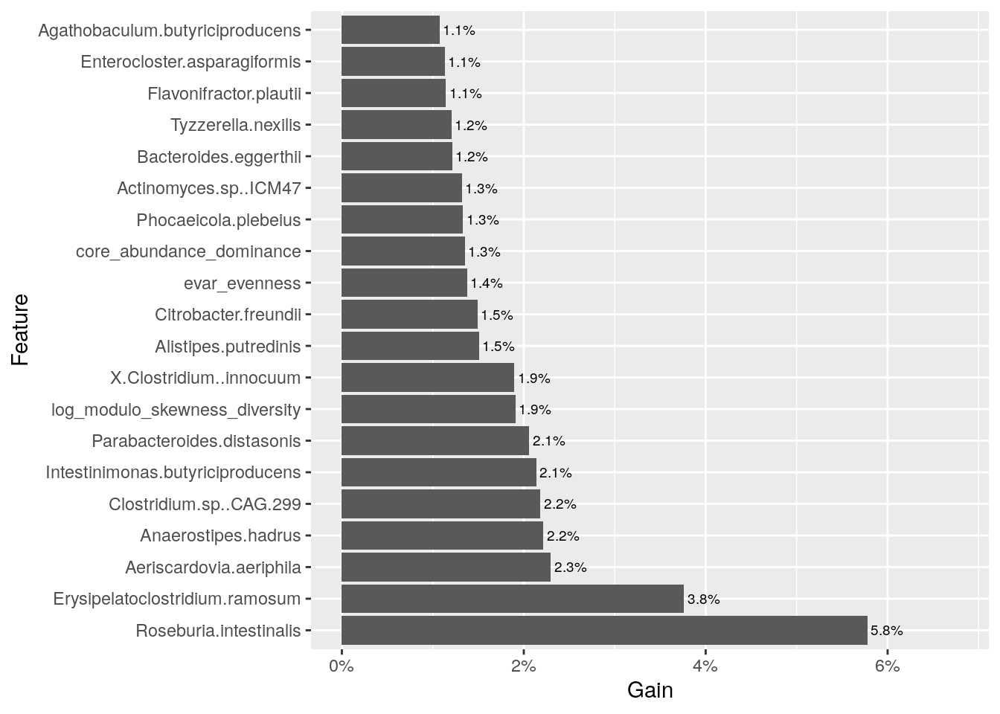

23 Machine learning
Machine learning (ML) is a branch of artificial intelligence. While there are several definitions of machine learning, it generally involves using computational methods (“machines”) to improve performance by identifying patterns in data (“learning”). ML encompasses a wide range of techniques, from simple statistical methods to complex algorithms like neural networks in deep learning.
Machine learning can be divided into supervised and unsupervised learning. Supervised ML is used to predict outcomes based on labeled data, whereas unsupervised ML is used to discover unknown patterns and structures within the data.
23.1 Unsupervised machine learning
“Unsupervised” means that the labels (e.g., patient status) are not known, and patterns are learned based solely on the data, such as an abundance table. Unsupervised ML is also known as data mining, where patterns are extracted from large datasets.
Common tasks in unsupervised machine learning include dimension reduction and clustering that we already discussed in Chapter 14 and Chapter 15, respectively.
23.2 Supervised machine learning
“Supervised” means that the training data is introduced beforehand. The training data contains labels (e.g., patient status), and the model is fitted based on the training data. After fitting, the model is utilized to predict labels of data whose labels are not known. Common tasks for supervised machine learning includes classification (predict classes) and regression (predict numeric values).
Data leakage occurs when information from the test set influences the model training process, leading to overly optimistic performance estimates. This can happen, for example, if preprocessing steps like scaling are applied to both the training and test data together, allowing the model to indirectly “see” the test data during training.
In supervised machine learning, the goal is to train a model that can predict outcomes for unseen data. To evaluate a model’s generalization ability, the data is typically split into training and test sets, often with a ratio of 70% training to 30% testing (or 80% vs 20%). The test set is kept separate and untouched during training. Training is usually enhanced with cross-validation to improve the model’s robustness. After training, the model’s performance is assessed using the test set, providing an estimate of its ability to predict new samples accurately.
However, when the dataset is small, splitting it into training and test sets might not be feasible. In such cases, cross-validation alone can be used to provide a rough estimate of the model’s performance. While this approach is not as reliable as having a separate test set, it can still give valuable insights into how well the model might perform on new data.
library(mia)
library(curatedMetagenomicData)
library(dplyr)
samples <- sampleMetadata[ sampleMetadata[["study_name"]] == "QinJ_2012", ]
tse <- returnSamples(
samples, dataType = "relative_abundance",
counts = TRUE, rownames = "short")
table(tse[["disease"]])
##
## T2D healthy
## 170 193We have binary classification problem. We are aiming to predict type 2 diabetes from control samples. Let’s first preprocess the data.
# We calculate all available alpha diversity measures
variables_before <- colnames(colData(tse))
tse <- addAlpha(tse, assay.type = "relative_abundance")
# By comparing variables, we get which indices were calculated
index <- colnames(colData(tse))[ !colnames(colData(tse)) %in% variables_before ]
# Agglomerate based on prevalence
# tse <- agglomerateByPrevalence(tse, prevalence = 0.5, detection = 0.01)
# Apply CLR transform
tse <- transformAssay(
tse, assay.type = "relative_abundance", method = "clr", MARGIN = "cols",
pseudocount = TRUE)
# Get assay
assay <- assay(tse, "clr")
# Transpose assay
assay <- t(assay)
# Add alpha diversity measures
assay <- cbind(assay, colData(tse)[, index, drop = FALSE])
# Drop variables that have zero variance
ind <- sapply(assay, sd, na.rm = TRUE)
ind <- is.na(ind) | ind == 0
assay <- assay[, !ind, drop = FALSE]
# Convert into data.frame
assay <- as.data.frame(assay)
# Get labels, i.e., known outcome
labels <- tse[["disease"]]In the example below, we use mikropml package. We aim to predict diagnosis (adenoma, colorectal cancer, or control) based on the microbial data.
library(mikropml)
# Combine data into single data.frame
df <- assay
df[["diagnosis"]] <- labels
# Run random forest
results <- run_ml(
df, "rf", outcome_colname = "diagnosis",
kfold = 2, cv_times = 5, training_frac = 0.8)
# Get the final model
res <- results[["trained_model"]][["finalModel"]]
# Print result
confusionMatrix(data = res[["predicted"]], reference = res[["y"]])
## Confusion Matrix and Statistics
##
## Reference
## Prediction T2D healthy
## T2D 81 46
## healthy 55 109
##
## Accuracy : 0.653
## 95% CI : (0.595, 0.708)
## No Information Rate : 0.533
## P-Value [Acc > NIR] : 2.13e-05
##
## Kappa : 0.3
##
## Mcnemar's Test P-Value : 0.426
##
## Sensitivity : 0.596
## Specificity : 0.703
## Pos Pred Value : 0.638
## Neg Pred Value : 0.665
## Prevalence : 0.467
## Detection Rate : 0.278
## Detection Prevalence : 0.436
## Balanced Accuracy : 0.649
##
## 'Positive' Class : T2D
## The model performs relatively well considering the data type as predicting outcomes based on complex microbiome data is typically challenging.
In this second model, we try to improve the prediction accuracy. We address the imbalanced data by applying class weights. Moreover, we utilize a more complex model, XGBoost, which is another commonly used algorithm in bioinformatics, usually one of the best performing models for tabular data (Shwartz-Ziv and Armon 2022). We use caret package which offers a R framework for machine learning.
library(caret)
library(xgboost)
# Set seed for reproducibility
set.seed(6358)
# Calculate class weights
weights <- 1 / (table(tse[["disease"]]) / ncol(tse))
class_weights <- weights[ match(labels, names(weights)) ]
# Specify train control
train_control <- trainControl(
method = "cv", number = 5,
classProbs = TRUE,
savePredictions = "final",
allowParallel = TRUE,
summaryFunction = twoClassSummary
)
# Specify hyperparameter tuning grid. Adjust the values for your own purpose.
# We have here less values to make the computation faster for this example.
tune_grid <- expand.grid(
nrounds = c(100, 250),
max_depth = c(10),
colsample_bytree = c(0.4, 0.6),
eta = c(0.1, 0.3),
gamma = c(0),
min_child_weight = c(3, 4),
subsample = c(0.6, 0.8)
)
# Train the model
model <- train(
x = assay,
y = labels,
preProcess = c("center", "scale"),
method = "xgbTree",
objective = "binary:logistic",
eval_metric = "auc",
metric = "ROC",
tuneGrid = tune_grid,
trControl = train_control,
weights = class_weights,
max_delta_step = 1
)
## [08:33:33] WARNING: src/c_api/c_api.cc:935: `ntree_limit` is deprecated, use `iteration_range` instead.
## [08:33:33] WARNING: src/c_api/c_api.cc:935: `ntree_limit` is deprecated, use `iteration_range` instead.
## [08:33:34] WARNING: src/c_api/c_api.cc:935: `ntree_limit` is deprecated, use `iteration_range` instead.
## [08:33:34] WARNING: src/c_api/c_api.cc:935: `ntree_limit` is deprecated, use `iteration_range` instead.
## [08:33:35] WARNING: src/c_api/c_api.cc:935: `ntree_limit` is deprecated, use `iteration_range` instead.
## [08:33:35] WARNING: src/c_api/c_api.cc:935: `ntree_limit` is deprecated, use `iteration_range` instead.
## [08:33:37] WARNING: src/c_api/c_api.cc:935: `ntree_limit` is deprecated, use `iteration_range` instead.
## [08:33:37] WARNING: src/c_api/c_api.cc:935: `ntree_limit` is deprecated, use `iteration_range` instead.
## [08:33:38] WARNING: src/c_api/c_api.cc:935: `ntree_limit` is deprecated, use `iteration_range` instead.
## [08:33:38] WARNING: src/c_api/c_api.cc:935: `ntree_limit` is deprecated, use `iteration_range` instead.
## [08:33:39] WARNING: src/c_api/c_api.cc:935: `ntree_limit` is deprecated, use `iteration_range` instead.
## [08:33:39] WARNING: src/c_api/c_api.cc:935: `ntree_limit` is deprecated, use `iteration_range` instead.
## [08:33:40] WARNING: src/c_api/c_api.cc:935: `ntree_limit` is deprecated, use `iteration_range` instead.
## [08:33:40] WARNING: src/c_api/c_api.cc:935: `ntree_limit` is deprecated, use `iteration_range` instead.
## [08:33:41] WARNING: src/c_api/c_api.cc:935: `ntree_limit` is deprecated, use `iteration_range` instead.
## [08:33:41] WARNING: src/c_api/c_api.cc:935: `ntree_limit` is deprecated, use `iteration_range` instead.
## [08:33:42] WARNING: src/c_api/c_api.cc:935: `ntree_limit` is deprecated, use `iteration_range` instead.
## [08:33:42] WARNING: src/c_api/c_api.cc:935: `ntree_limit` is deprecated, use `iteration_range` instead.
## [08:33:42] WARNING: src/c_api/c_api.cc:935: `ntree_limit` is deprecated, use `iteration_range` instead.
## [08:33:42] WARNING: src/c_api/c_api.cc:935: `ntree_limit` is deprecated, use `iteration_range` instead.
## [08:33:43] WARNING: src/c_api/c_api.cc:935: `ntree_limit` is deprecated, use `iteration_range` instead.
## [08:33:43] WARNING: src/c_api/c_api.cc:935: `ntree_limit` is deprecated, use `iteration_range` instead.
## [08:33:44] WARNING: src/c_api/c_api.cc:935: `ntree_limit` is deprecated, use `iteration_range` instead.
## [08:33:44] WARNING: src/c_api/c_api.cc:935: `ntree_limit` is deprecated, use `iteration_range` instead.
## [08:33:44] WARNING: src/c_api/c_api.cc:935: `ntree_limit` is deprecated, use `iteration_range` instead.
## [08:33:45] WARNING: src/c_api/c_api.cc:935: `ntree_limit` is deprecated, use `iteration_range` instead.
## [08:33:45] WARNING: src/c_api/c_api.cc:935: `ntree_limit` is deprecated, use `iteration_range` instead.
## [08:33:45] WARNING: src/c_api/c_api.cc:935: `ntree_limit` is deprecated, use `iteration_range` instead.
## [08:33:46] WARNING: src/c_api/c_api.cc:935: `ntree_limit` is deprecated, use `iteration_range` instead.
## [08:33:46] WARNING: src/c_api/c_api.cc:935: `ntree_limit` is deprecated, use `iteration_range` instead.
## [08:33:47] WARNING: src/c_api/c_api.cc:935: `ntree_limit` is deprecated, use `iteration_range` instead.
## [08:33:47] WARNING: src/c_api/c_api.cc:935: `ntree_limit` is deprecated, use `iteration_range` instead.
## [08:33:48] WARNING: src/c_api/c_api.cc:935: `ntree_limit` is deprecated, use `iteration_range` instead.
## [08:33:48] WARNING: src/c_api/c_api.cc:935: `ntree_limit` is deprecated, use `iteration_range` instead.
## [08:33:49] WARNING: src/c_api/c_api.cc:935: `ntree_limit` is deprecated, use `iteration_range` instead.
## [08:33:49] WARNING: src/c_api/c_api.cc:935: `ntree_limit` is deprecated, use `iteration_range` instead.
## [08:33:50] WARNING: src/c_api/c_api.cc:935: `ntree_limit` is deprecated, use `iteration_range` instead.
## [08:33:50] WARNING: src/c_api/c_api.cc:935: `ntree_limit` is deprecated, use `iteration_range` instead.
## [08:33:50] WARNING: src/c_api/c_api.cc:935: `ntree_limit` is deprecated, use `iteration_range` instead.
## [08:33:51] WARNING: src/c_api/c_api.cc:935: `ntree_limit` is deprecated, use `iteration_range` instead.
## [08:33:52] WARNING: src/c_api/c_api.cc:935: `ntree_limit` is deprecated, use `iteration_range` instead.
## [08:33:52] WARNING: src/c_api/c_api.cc:935: `ntree_limit` is deprecated, use `iteration_range` instead.
## [08:33:53] WARNING: src/c_api/c_api.cc:935: `ntree_limit` is deprecated, use `iteration_range` instead.
## [08:33:53] WARNING: src/c_api/c_api.cc:935: `ntree_limit` is deprecated, use `iteration_range` instead.
## [08:33:54] WARNING: src/c_api/c_api.cc:935: `ntree_limit` is deprecated, use `iteration_range` instead.
## [08:33:54] WARNING: src/c_api/c_api.cc:935: `ntree_limit` is deprecated, use `iteration_range` instead.
## [08:33:55] WARNING: src/c_api/c_api.cc:935: `ntree_limit` is deprecated, use `iteration_range` instead.
## [08:33:55] WARNING: src/c_api/c_api.cc:935: `ntree_limit` is deprecated, use `iteration_range` instead.
## [08:33:56] WARNING: src/c_api/c_api.cc:935: `ntree_limit` is deprecated, use `iteration_range` instead.
## [08:33:56] WARNING: src/c_api/c_api.cc:935: `ntree_limit` is deprecated, use `iteration_range` instead.
## [08:33:56] WARNING: src/c_api/c_api.cc:935: `ntree_limit` is deprecated, use `iteration_range` instead.
## [08:33:56] WARNING: src/c_api/c_api.cc:935: `ntree_limit` is deprecated, use `iteration_range` instead.
## [08:33:57] WARNING: src/c_api/c_api.cc:935: `ntree_limit` is deprecated, use `iteration_range` instead.
## [08:33:57] WARNING: src/c_api/c_api.cc:935: `ntree_limit` is deprecated, use `iteration_range` instead.
## [08:33:58] WARNING: src/c_api/c_api.cc:935: `ntree_limit` is deprecated, use `iteration_range` instead.
## [08:33:58] WARNING: src/c_api/c_api.cc:935: `ntree_limit` is deprecated, use `iteration_range` instead.
## [08:33:58] WARNING: src/c_api/c_api.cc:935: `ntree_limit` is deprecated, use `iteration_range` instead.
## [08:33:58] WARNING: src/c_api/c_api.cc:935: `ntree_limit` is deprecated, use `iteration_range` instead.
## [08:33:59] WARNING: src/c_api/c_api.cc:935: `ntree_limit` is deprecated, use `iteration_range` instead.
## [08:33:59] WARNING: src/c_api/c_api.cc:935: `ntree_limit` is deprecated, use `iteration_range` instead.
## [08:34:00] WARNING: src/c_api/c_api.cc:935: `ntree_limit` is deprecated, use `iteration_range` instead.
## [08:34:00] WARNING: src/c_api/c_api.cc:935: `ntree_limit` is deprecated, use `iteration_range` instead.
## [08:34:01] WARNING: src/c_api/c_api.cc:935: `ntree_limit` is deprecated, use `iteration_range` instead.
## [08:34:01] WARNING: src/c_api/c_api.cc:935: `ntree_limit` is deprecated, use `iteration_range` instead.
## [08:34:02] WARNING: src/c_api/c_api.cc:935: `ntree_limit` is deprecated, use `iteration_range` instead.
## [08:34:02] WARNING: src/c_api/c_api.cc:935: `ntree_limit` is deprecated, use `iteration_range` instead.
## [08:34:03] WARNING: src/c_api/c_api.cc:935: `ntree_limit` is deprecated, use `iteration_range` instead.
## [08:34:03] WARNING: src/c_api/c_api.cc:935: `ntree_limit` is deprecated, use `iteration_range` instead.
## [08:34:03] WARNING: src/c_api/c_api.cc:935: `ntree_limit` is deprecated, use `iteration_range` instead.
## [08:34:04] WARNING: src/c_api/c_api.cc:935: `ntree_limit` is deprecated, use `iteration_range` instead.
## [08:34:04] WARNING: src/c_api/c_api.cc:935: `ntree_limit` is deprecated, use `iteration_range` instead.
## [08:34:04] WARNING: src/c_api/c_api.cc:935: `ntree_limit` is deprecated, use `iteration_range` instead.
## [08:34:05] WARNING: src/c_api/c_api.cc:935: `ntree_limit` is deprecated, use `iteration_range` instead.
## [08:34:06] WARNING: src/c_api/c_api.cc:935: `ntree_limit` is deprecated, use `iteration_range` instead.
## [08:34:07] WARNING: src/c_api/c_api.cc:935: `ntree_limit` is deprecated, use `iteration_range` instead.
## [08:34:07] WARNING: src/c_api/c_api.cc:935: `ntree_limit` is deprecated, use `iteration_range` instead.
## [08:34:08] WARNING: src/c_api/c_api.cc:935: `ntree_limit` is deprecated, use `iteration_range` instead.
## [08:34:08] WARNING: src/c_api/c_api.cc:935: `ntree_limit` is deprecated, use `iteration_range` instead.
## [08:34:09] WARNING: src/c_api/c_api.cc:935: `ntree_limit` is deprecated, use `iteration_range` instead.
## [08:34:09] WARNING: src/c_api/c_api.cc:935: `ntree_limit` is deprecated, use `iteration_range` instead.
## [08:34:09] WARNING: src/c_api/c_api.cc:935: `ntree_limit` is deprecated, use `iteration_range` instead.
## [08:34:10] WARNING: src/c_api/c_api.cc:935: `ntree_limit` is deprecated, use `iteration_range` instead.
## [08:34:10] WARNING: src/c_api/c_api.cc:935: `ntree_limit` is deprecated, use `iteration_range` instead.
## [08:34:10] WARNING: src/c_api/c_api.cc:935: `ntree_limit` is deprecated, use `iteration_range` instead.
## [08:34:11] WARNING: src/c_api/c_api.cc:935: `ntree_limit` is deprecated, use `iteration_range` instead.
## [08:34:11] WARNING: src/c_api/c_api.cc:935: `ntree_limit` is deprecated, use `iteration_range` instead.
## [08:34:12] WARNING: src/c_api/c_api.cc:935: `ntree_limit` is deprecated, use `iteration_range` instead.
## [08:34:12] WARNING: src/c_api/c_api.cc:935: `ntree_limit` is deprecated, use `iteration_range` instead.
## [08:34:12] WARNING: src/c_api/c_api.cc:935: `ntree_limit` is deprecated, use `iteration_range` instead.
## [08:34:12] WARNING: src/c_api/c_api.cc:935: `ntree_limit` is deprecated, use `iteration_range` instead.
## [08:34:13] WARNING: src/c_api/c_api.cc:935: `ntree_limit` is deprecated, use `iteration_range` instead.
## [08:34:13] WARNING: src/c_api/c_api.cc:935: `ntree_limit` is deprecated, use `iteration_range` instead.
## [08:34:14] WARNING: src/c_api/c_api.cc:935: `ntree_limit` is deprecated, use `iteration_range` instead.
## [08:34:14] WARNING: src/c_api/c_api.cc:935: `ntree_limit` is deprecated, use `iteration_range` instead.
## [08:34:15] WARNING: src/c_api/c_api.cc:935: `ntree_limit` is deprecated, use `iteration_range` instead.
## [08:34:15] WARNING: src/c_api/c_api.cc:935: `ntree_limit` is deprecated, use `iteration_range` instead.
## [08:34:16] WARNING: src/c_api/c_api.cc:935: `ntree_limit` is deprecated, use `iteration_range` instead.
## [08:34:16] WARNING: src/c_api/c_api.cc:935: `ntree_limit` is deprecated, use `iteration_range` instead.
## [08:34:17] WARNING: src/c_api/c_api.cc:935: `ntree_limit` is deprecated, use `iteration_range` instead.
## [08:34:17] WARNING: src/c_api/c_api.cc:935: `ntree_limit` is deprecated, use `iteration_range` instead.
## [08:34:17] WARNING: src/c_api/c_api.cc:935: `ntree_limit` is deprecated, use `iteration_range` instead.
## [08:34:18] WARNING: src/c_api/c_api.cc:935: `ntree_limit` is deprecated, use `iteration_range` instead.
## [08:34:18] WARNING: src/c_api/c_api.cc:935: `ntree_limit` is deprecated, use `iteration_range` instead.
## [08:34:18] WARNING: src/c_api/c_api.cc:935: `ntree_limit` is deprecated, use `iteration_range` instead.
## [08:34:19] WARNING: src/c_api/c_api.cc:935: `ntree_limit` is deprecated, use `iteration_range` instead.
## [08:34:20] WARNING: src/c_api/c_api.cc:935: `ntree_limit` is deprecated, use `iteration_range` instead.
## [08:34:21] WARNING: src/c_api/c_api.cc:935: `ntree_limit` is deprecated, use `iteration_range` instead.
## [08:34:21] WARNING: src/c_api/c_api.cc:935: `ntree_limit` is deprecated, use `iteration_range` instead.
## [08:34:22] WARNING: src/c_api/c_api.cc:935: `ntree_limit` is deprecated, use `iteration_range` instead.
## [08:34:22] WARNING: src/c_api/c_api.cc:935: `ntree_limit` is deprecated, use `iteration_range` instead.
## [08:34:23] WARNING: src/c_api/c_api.cc:935: `ntree_limit` is deprecated, use `iteration_range` instead.
## [08:34:23] WARNING: src/c_api/c_api.cc:935: `ntree_limit` is deprecated, use `iteration_range` instead.
## [08:34:23] WARNING: src/c_api/c_api.cc:935: `ntree_limit` is deprecated, use `iteration_range` instead.
## [08:34:23] WARNING: src/c_api/c_api.cc:935: `ntree_limit` is deprecated, use `iteration_range` instead.
## [08:34:24] WARNING: src/c_api/c_api.cc:935: `ntree_limit` is deprecated, use `iteration_range` instead.
## [08:34:24] WARNING: src/c_api/c_api.cc:935: `ntree_limit` is deprecated, use `iteration_range` instead.
## [08:34:25] WARNING: src/c_api/c_api.cc:935: `ntree_limit` is deprecated, use `iteration_range` instead.
## [08:34:25] WARNING: src/c_api/c_api.cc:935: `ntree_limit` is deprecated, use `iteration_range` instead.
## [08:34:25] WARNING: src/c_api/c_api.cc:935: `ntree_limit` is deprecated, use `iteration_range` instead.
## [08:34:25] WARNING: src/c_api/c_api.cc:935: `ntree_limit` is deprecated, use `iteration_range` instead.
## [08:34:26] WARNING: src/c_api/c_api.cc:935: `ntree_limit` is deprecated, use `iteration_range` instead.
## [08:34:26] WARNING: src/c_api/c_api.cc:935: `ntree_limit` is deprecated, use `iteration_range` instead.
## [08:34:27] WARNING: src/c_api/c_api.cc:935: `ntree_limit` is deprecated, use `iteration_range` instead.
## [08:34:27] WARNING: src/c_api/c_api.cc:935: `ntree_limit` is deprecated, use `iteration_range` instead.
## [08:34:28] WARNING: src/c_api/c_api.cc:935: `ntree_limit` is deprecated, use `iteration_range` instead.
## [08:34:28] WARNING: src/c_api/c_api.cc:935: `ntree_limit` is deprecated, use `iteration_range` instead.
## [08:34:29] WARNING: src/c_api/c_api.cc:935: `ntree_limit` is deprecated, use `iteration_range` instead.
## [08:34:29] WARNING: src/c_api/c_api.cc:935: `ntree_limit` is deprecated, use `iteration_range` instead.
## [08:34:29] WARNING: src/c_api/c_api.cc:935: `ntree_limit` is deprecated, use `iteration_range` instead.
## [08:34:30] WARNING: src/c_api/c_api.cc:935: `ntree_limit` is deprecated, use `iteration_range` instead.
## [08:34:30] WARNING: src/c_api/c_api.cc:935: `ntree_limit` is deprecated, use `iteration_range` instead.
## [08:34:30] WARNING: src/c_api/c_api.cc:935: `ntree_limit` is deprecated, use `iteration_range` instead.
## [08:34:31] WARNING: src/c_api/c_api.cc:935: `ntree_limit` is deprecated, use `iteration_range` instead.
## [08:34:31] WARNING: src/c_api/c_api.cc:935: `ntree_limit` is deprecated, use `iteration_range` instead.
## [08:34:32] WARNING: src/c_api/c_api.cc:935: `ntree_limit` is deprecated, use `iteration_range` instead.
## [08:34:32] WARNING: src/c_api/c_api.cc:935: `ntree_limit` is deprecated, use `iteration_range` instead.
## [08:34:33] WARNING: src/c_api/c_api.cc:935: `ntree_limit` is deprecated, use `iteration_range` instead.
## [08:34:33] WARNING: src/c_api/c_api.cc:935: `ntree_limit` is deprecated, use `iteration_range` instead.
## [08:34:34] WARNING: src/c_api/c_api.cc:935: `ntree_limit` is deprecated, use `iteration_range` instead.
## [08:34:34] WARNING: src/c_api/c_api.cc:935: `ntree_limit` is deprecated, use `iteration_range` instead.
## [08:34:35] WARNING: src/c_api/c_api.cc:935: `ntree_limit` is deprecated, use `iteration_range` instead.
## [08:34:35] WARNING: src/c_api/c_api.cc:935: `ntree_limit` is deprecated, use `iteration_range` instead.
## [08:34:36] WARNING: src/c_api/c_api.cc:935: `ntree_limit` is deprecated, use `iteration_range` instead.
## [08:34:37] WARNING: src/c_api/c_api.cc:935: `ntree_limit` is deprecated, use `iteration_range` instead.
## [08:34:38] WARNING: src/c_api/c_api.cc:935: `ntree_limit` is deprecated, use `iteration_range` instead.
## [08:34:38] WARNING: src/c_api/c_api.cc:935: `ntree_limit` is deprecated, use `iteration_range` instead.
## [08:34:39] WARNING: src/c_api/c_api.cc:935: `ntree_limit` is deprecated, use `iteration_range` instead.
## [08:34:39] WARNING: src/c_api/c_api.cc:935: `ntree_limit` is deprecated, use `iteration_range` instead.
## [08:34:39] WARNING: src/c_api/c_api.cc:935: `ntree_limit` is deprecated, use `iteration_range` instead.
## [08:34:39] WARNING: src/c_api/c_api.cc:935: `ntree_limit` is deprecated, use `iteration_range` instead.
## [08:34:40] WARNING: src/c_api/c_api.cc:935: `ntree_limit` is deprecated, use `iteration_range` instead.
## [08:34:40] WARNING: src/c_api/c_api.cc:935: `ntree_limit` is deprecated, use `iteration_range` instead.
## [08:34:41] WARNING: src/c_api/c_api.cc:935: `ntree_limit` is deprecated, use `iteration_range` instead.
## [08:34:41] WARNING: src/c_api/c_api.cc:935: `ntree_limit` is deprecated, use `iteration_range` instead.
## [08:34:42] WARNING: src/c_api/c_api.cc:935: `ntree_limit` is deprecated, use `iteration_range` instead.
## [08:34:42] WARNING: src/c_api/c_api.cc:935: `ntree_limit` is deprecated, use `iteration_range` instead.
## [08:34:42] WARNING: src/c_api/c_api.cc:935: `ntree_limit` is deprecated, use `iteration_range` instead.
## [08:34:42] WARNING: src/c_api/c_api.cc:935: `ntree_limit` is deprecated, use `iteration_range` instead.
## [08:34:43] WARNING: src/c_api/c_api.cc:935: `ntree_limit` is deprecated, use `iteration_range` instead.
## [08:34:43] WARNING: src/c_api/c_api.cc:935: `ntree_limit` is deprecated, use `iteration_range` instead.
# Get predictions
res <- model[["pred"]]
# Print result
confusionMatrix(data = res[["pred"]], reference = res[["obs"]])
## Confusion Matrix and Statistics
##
## Reference
## Prediction T2D healthy
## T2D 109 57
## healthy 61 136
##
## Accuracy : 0.675
## 95% CI : (0.624, 0.723)
## No Information Rate : 0.532
## P-Value [Acc > NIR] : 2.05e-08
##
## Kappa : 0.346
##
## Mcnemar's Test P-Value : 0.782
##
## Sensitivity : 0.641
## Specificity : 0.705
## Pos Pred Value : 0.657
## Neg Pred Value : 0.690
## Prevalence : 0.468
## Detection Rate : 0.300
## Detection Prevalence : 0.457
## Balanced Accuracy : 0.673
##
## 'Positive' Class : T2D
## A receiver operating characteristic curve (ROC) is a common visualization technique for binary classification problems.
library(ROCR)
# Get positive class
pos_class <-levels(res[["obs"]])[[1]]
# Create ROC plot
pred <- prediction(res[[pos_class]], ifelse(res[["obs"]] == pos_class, 1, 0))
perf <- performance(pred, measure = "tpr", x.measure = "fpr")
p <- plot(perf)p
## NULLXGBoost model returns also feature importances that can be visualized with bar plot.
library(xgboost)
# Get feature importance
df <- xgb.importance(model = model$finalModel)
# Take top 20 features
df <- df[seq_len(20), ]
# Factorize to preserve order
df[["Feature"]] <- factor(df[["Feature"]], levels = df[["Feature"]])
# Round values, add percentage symbol
df[["Percentage"]] <- paste0(round(df[["Gain"]], 3)*100, "%")
# Create a plot
p <- ggplot(df, aes(x = Feature, y = Gain)) +
geom_bar(stat = "identity") +
geom_text(aes(label = Percentage), hjust = -0.1, size = 2.5) +
expand_limits(y = max(df[["Gain"]]) + 0.01) +
scale_y_continuous(labels = scales::percent) +
coord_flip()
p
These importances show which features have most of the information for predicting the outcome.
Our model shows a slight improvement over previous versions, but its performance remains average. The key to better performance lies in the quality of the data; even the most advanced models cannot compensate for data that lacks essential information. The dataset do not have sufficient amount of data on carcinoma to build an accurate predictive model.